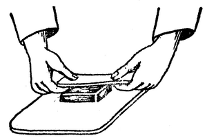
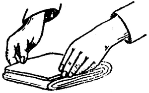
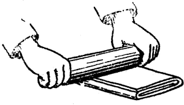

 Untul se aşează la mijloc.
 Se împătureşte în două.
 Se întinde cu sucitorul pe lungime.
Aluatul se pregăteşte la rece. Făina trebuie
să fie de bună calitate. Untul să fie proaspăt
şi fără zer. Apa să fie călduţă
şi în ea să se dizolve sarea. Se pune făina
pe planşeta de aluat, se face o adîncitură în
mijloc şi se toarnă cîte puţin apa
amestecînd cu o furculiţă pînă se
încorporează făina cu apa. Apoi se
frămîntă cu mîna pînă se obţine
o cocă mai mult moale şi bine frămîntată;
se strînge în formă de minge şi se lasă
15 minute să se odihnească acoperită. Între
timp se pregăteşte untul presîndu-l bine ca să
iasă zerul, apoi se modelează în forma de
pătrat. Se presară puţină făină pe
planşetă; se pune aluatul pe planşetă, se
întinde o foaie de 1,5 cm grosime si în mijlocul foii se
pune untul; peste unt se strîng marginile foii, în
formă de plic şi se dă la rece pentru 15 minute;
apoi se pune aluatul din nou pe planşetă
presărată cu puţină făină; aşa
cum este împăturit aluatul se pune pe mijlocul lui
sucitorul şi se întinde apăsînd peste
foaie. Se întinde în formă dreptunghiulară
şi să fie peste tot la fel de groasă. Apoi se
împătureşte în trei părţi egale
astfel că partea din stînga să se suprapună
peste două treimi. Se întinde cu sucitorul pe lungime
din suprafaţa foii şi partea din dreapta se suprapune
peste partea din stînga, ca în figura 1 şi se
dă din nou la rece. Această operaţie de întins
cu sucitorul şi împăturire se repetă de 3-4
ori, cu pauza de răcire şi de fiecare dată se
împâturetşe invers. Apoi se întinde foaia de
circa 3 mm grosime, se taie în dreptunghiuri mici, se pune pe
mijlocul lor o linguriţă de umplutură; se
întorc marginile dreptunghiului peste umplutură în
aşa fel încît marginile să fie suprapuse
exact, Se aşează pateurile în tava neunsă care
se introduce în cuptor fierbinte. Nu se deschide 15 minute
cuptorul. După 15 minute cînd foile s-au mai
desfăcut se face. focul la aragaz mai mic şi se mai
lasă în cuptor pînă se rumenesc uşor.
Poftă bună!
Copyright 1998-2003 Mihai Christodorescu. All rights reserved.
Maintained by Mihai Christodorescu (http://www.cs.wisc.edu/~mihai).
Created: Mon Dec 21 21:12:13 PST 1998
Last modified: Fri Aug 29 18:57:56 CDT 2003